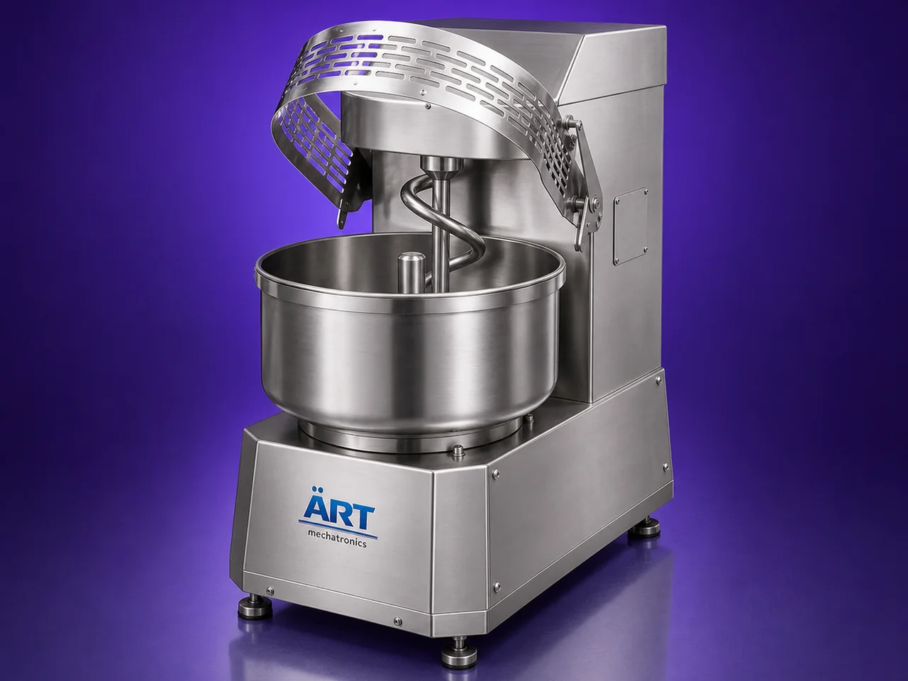

Spiral Mixer Machine (Industrial Dough Mixing & Kneading System for Bakery Applications)
A Spiral Mixer Machine, also known as a Spiral Dough Mixer or Bakery Spiral Blender, is a specialized industrial mixing equipment designed for efficient kneading and uniform mixing of dough and high-viscosity food materials.

About the Spiral Mixer
The machine uses a spiral-shaped agitator combined with a rotating bowl, which creates a gentle yet powerful mixing action that develops: ✔ Proper gluten structure ✔ Uniform dough texture ✔ Consistent hydration ✔ Smooth and elastic dough quality
Spiral mixers are widely used in industries such as:
• Commercial bakeries
• Bread manufacturing plants
• Pizza production units
• Biscuit and bakery industries
• Food processing industries
• Hotel and hospitality kitchens
where high-quality dough preparation and batch consistency are critical.
Compared to conventional mixers, spiral mixers provide: ✔ Better dough development ✔ Lower heat generation ✔ Faster kneading ✔ Improved product consistency ✔ Reduced damage to dough structure
ART Mechatronics offers high-performance spiral mixer machines, engineered for heavy-duty bakery operations, hygienic processing, energy efficiency, and reliable industrial performance.
One machine, many names
Buyers search for this equipment under many terms — we manufacture all of them:
Working Principle of Spiral Mixer Machine
Creates efficient kneading and folding action
Types of Spiral Mixer Machines
Industries Using Spiral Mixer Machine
🍞 Bakery Industry
- Bread dough preparation
🍕 Pizza Industry
- Pizza dough kneading
🥐 Commercial Food Industry
- Bakery product processing
🏨 Hospitality Industry
- Hotels and commercial kitchens
🍪 Biscuit & Snack Industry
- Dough and batter preparation
Features & Advantages
✔ Excellent dough kneading performance ✔ Uniform dough consistency ✔ Faster dough preparation ✔ Low heat generation during mixing ✔ Strong gluten development ✔ Heavy-duty industrial construction ✔ Hygienic and easy-to-clean design ✔ Energy-efficient operation ✔ Suitable for continuous bakery production
Technical Highlights
- Capacity: Small bakery to industrial production scale
- Mixing Type: Spiral kneading action
- Bowl Type: Fixed / removable bowl
- Construction: Stainless Steel / Mild Steel
- Drive: Motor with gearbox
- Speed Control: Single / double speed
- Operation: Manual / Automatic / PLC-based
Turnkey Bakery Mixing Solutions
ART Mechatronics offers:
- Complete spiral mixer system design
- Dough handling integration
- Automated bakery process solutions
- Installation & commissioning
- After-sales service & AMC
Why Choose Art Mechatronics
- Expertise in industrial bakery equipment
- Customized dough mixing solutions
- Heavy-duty and reliable machine construction
- Hygienic and energy-efficient designs
- Proven bakery industry performance
Applications
- Commercial Bakery Plants
- Bread Manufacturing Units
- Pizza Production Facilities
- Biscuit & Snack Processing Plants
- Hotels & Commercial Kitchens
Industries that use the Spiral Mixer
Related Mixing & Blending machines
Get pricing & specs for the Spiral Mixer
Share the product, target capacity, current process and plant location. These details help our engineers discuss the right machine or line configuration.
One partner, from design to start-up
ART Mechatronics designs, manufactures, installs and commissions your Spiral Mixer solution with regional presence in India, UAE and Thailand.